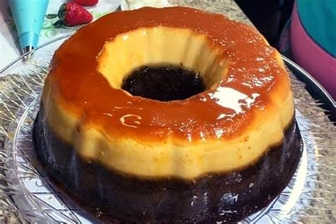

Flancocho es un postre que siempre e querido probar.

Ingredientes
Para el caramelo:
1 taza de azúcar
1 taza de agua
Para el bizcocho:
1 bolsa de harina para bizcocho
1 taza de agua
1 taza de aceite vegetal
3 huevos
Para el flan:
5 huevos
1 lata de leche evaporada
1 lata de leche condensada
1 paquete de queso crema
Pasos
En una cacerola a fuego medio combina azúcar y agua y deja caramelizar por varios minutos. Una vez listo,
lleva rápidamente a un molde para bizcocho.
Por otro lado, en un recipiente agrega la harina del bizcocho y agua. Combina hasta lograr una mezcla
homogénea y posteriormente añade aceite y huevos para batir una vez más.
Lleva la mezcla del bizcocho al molde con caramelo, mientras preparas el flan. Para este, licúa huevos, leche
evaporada, leche condensada con una barra de queso crema. Cuando todo esté listo, verterás también sobre el
bizcocho.
En baño María hornea a 350 F durante 45 a 50 minutos. ¡Buen provecho!
Esta receta fue copiada de la página www.sabrosia.pr